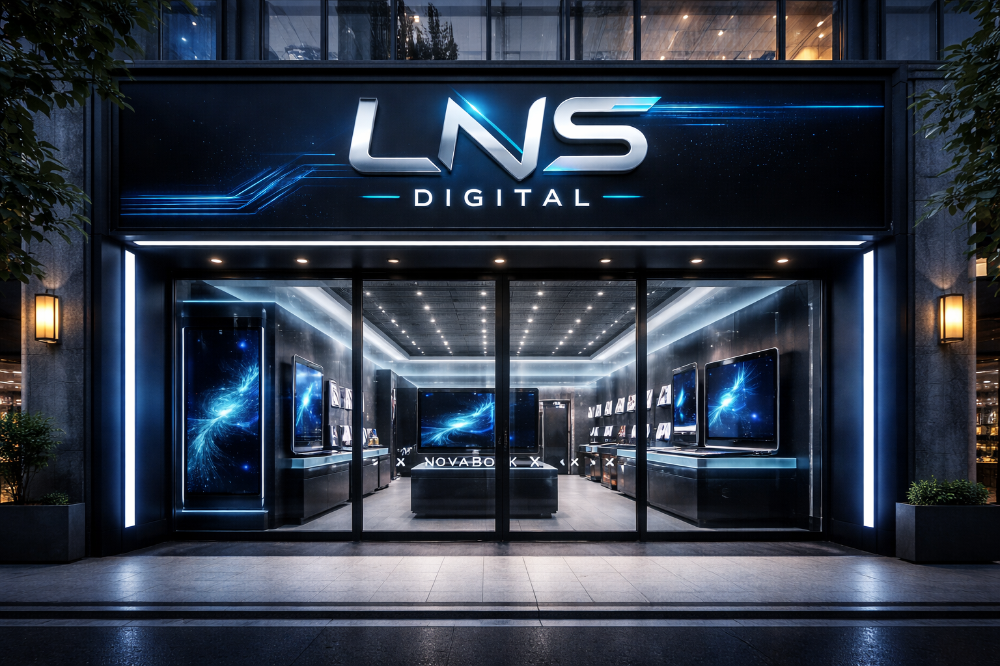
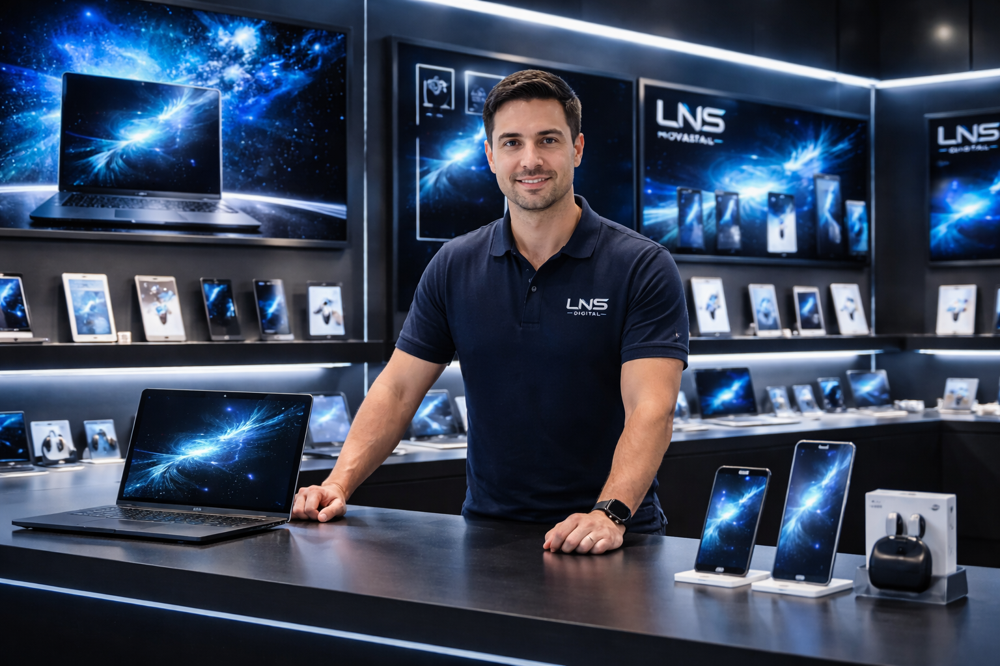

¡Conoce un poco de nuestra historia!

LNS Digital nace como un proyecto innovador enfocado en acercar la tecnología de última generación a los usuarios que buscan rendimiento, diseño y confiabilidad. Fundada por Lucho Stani, la marca surge con la idea de crear un espacio donde la tecnología no solo se venda, sino que también se experimente.
Desde sus inicios, LNS Digital se pensó como una tienda especializada en dispositivos tecnológicos de alto rendimiento, incluyendo smartphones, tablets y notebooks, diseñados para adaptarse a las necesidades del mundo moderno: trabajo, estudio, creatividad y entretenimiento.
Inspirándose en las tendencias actuales de la industria tecnológica, la marca desarrolló una línea propia de dispositivos caracterizados por su estética futurista, potencia y calidad de construcción. Entre ellos se destacan el LNS Quantum Pro, un smartphone de gama alta diseñado para ofrecer velocidad, fotografía avanzada y una experiencia visual inmersiva; la LNS Nebula Tab X, una tablet orientada a productividad y contenido multimedia; y la LNS NovaBook X, una notebook premium pensada para profesionales, estudiantes y creadores de contenido que necesitan alto rendimiento en un diseño elegante y portátil.
La tienda LNS Digital fue concebida como un entorno moderno, donde el diseño minimalista y la iluminación tecnológica permiten destacar cada producto. En este espacio, los clientes pueden explorar dispositivos, conocer sus características y descubrir cómo la tecnología puede mejorar su vida cotidiana.
Hoy, LNS Digital representa una visión clara: combinar innovación, diseño y rendimiento para ofrecer tecnología preparada para el futuro.
